Soft matter research
What is soft matter ?
Matter that reorganizes under forces near thermal energy, $k_BT \approx 4\ \mathrm{zJ}$. Here, entropy, interfaces, confinement, and weak interactions compete with structure. Gels, foams, colloids, polymers, biofluids, drying drops, and cellular condensates live in this regime. They flow, jam, buckle, crystallize, phase separate, and remember the path that made them.
From nanometres to capillary length scales.
Molecular scale
DNA, proteins, polymers. About 1 nm.
Colloid, cell
Particles, cells. 1 to 10 μm.
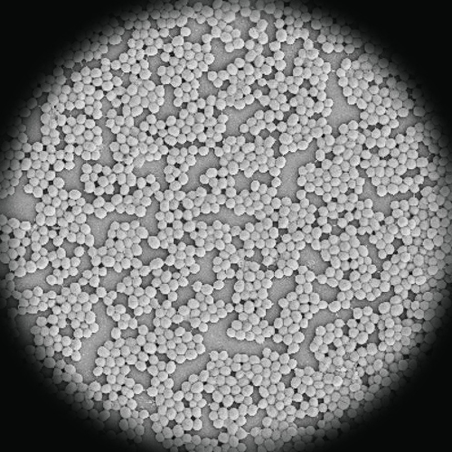
Staphylococcus in a droplet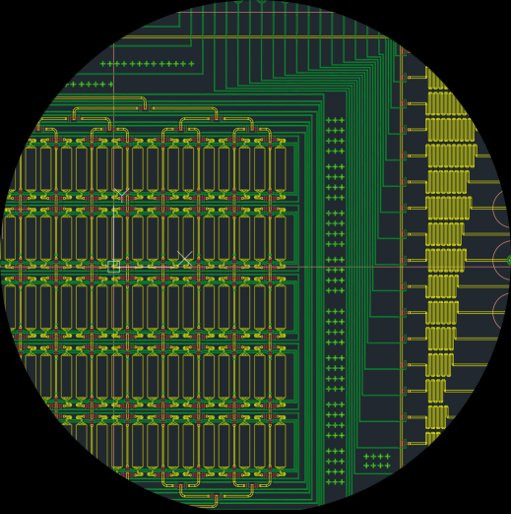
Multiplexed microfluidic device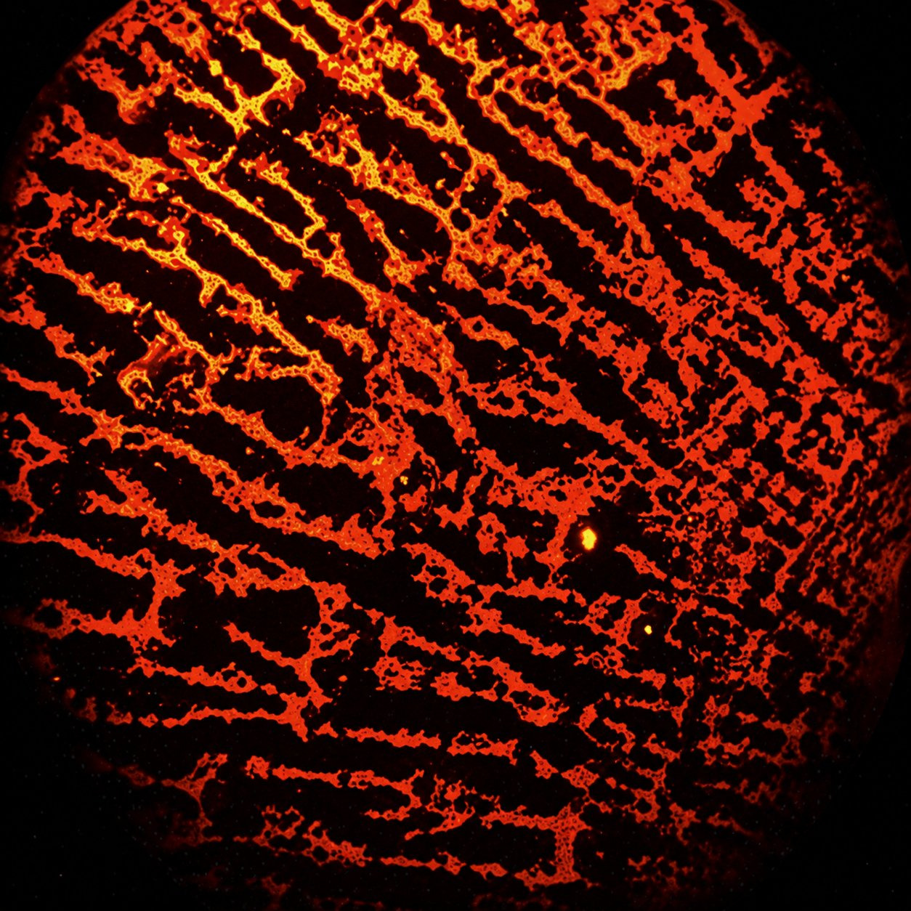
Deposit from a liquid bridge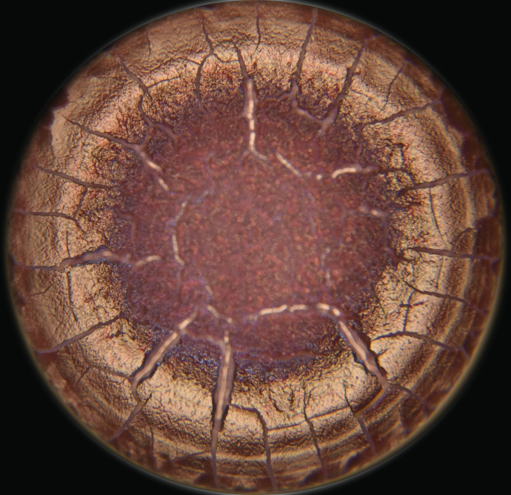
Dried blood dropletFrom the lab
Bacteria (staphylococcus) in a droplet, multiplexed microfluidic device, deposit from a liquid bridge, dried blood droplet.
Why soft matter, and where the edge is
Because softness turns weak forces into structure, motion, and memory. My systems run from drying droplets to DNA, RNA, proteins, and their condensates, and the edge is always the same: how to program rearrangement, and how to read the structure it leaves behind.
Six threads run through the work that follows.
Order that organizes itself.
Self-assembly
Chips that route signals.
Microfluidics
AI that reads what the eye misses.
AI & imaging
Simulations that precede the device.
Computational fluid dynamics
Bacteria that organize as they dry.
Bacterial fluid interactions
Droplets that organize matter.
Droplet physics
Order that organizes itself
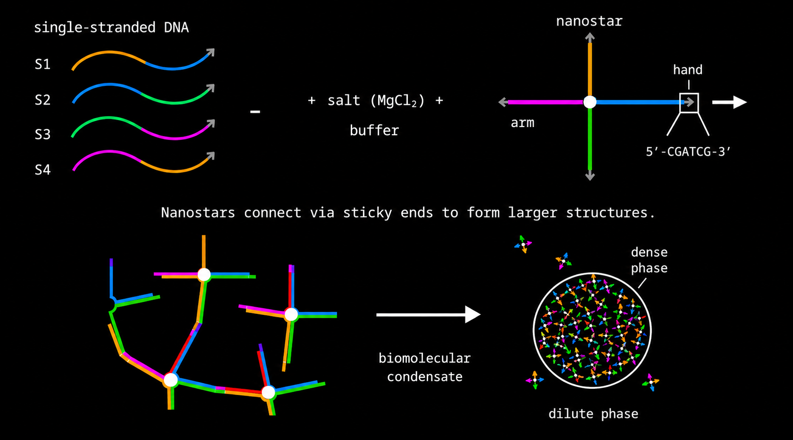
DNA, RNA, and proteins are multivalent, each able to grab several partners at once, so they organize into larger structures that carry a function. We want to study that, and to harness it, taking control of self-assembly ourselves.
For example, take DNA. It's multivalent and naturally sticky, and its bases pair up by simple, predictable rules. Get the sequence right and you can fold it into almost any tiny shape you want.
Our shape is a four-armed star, a nanostar, with a sticky tip on each arm. Throw a crowd of them together and they grab arm to arm, gathering into tiny droplets. Each droplet is a condensate, a concentrated blob of DNA suspended in the water around it.
In the adjacent video, the DNA strands are loaded into a capillary along with the buffer and salts. They self-assemble as designed and form condensates at room temperature. The condensate and the surrounding water constantly exchange molecules, a back-and-forth process that remains steady at room temperature.
As you change the temperature, say, by heating the sample, the droplets melt, just as you would expect when bonds break. But keep heating, and they come back, reforming at a temperature where they have no business existing. Read why in our PRL.
These condensates are programmable. Three questions drive the work:
Can a condensate capture and concentrate one target sequence out of a crude mixture, lifting it above the limit of detection?
Can it be switched across its phase boundary on cue, assembling or dissolving on command?
Can the same condensate be driven from liquid to solid, locking the assembly in place?
Chips that route signals
We answer those three questions in hardware, on chips of glass and PDMS. Droplet generators split a sample into thousands of identical picolitre drops. Multilayer valve chips route and switch fluid through an addressable grid of chambers.
First, search. A droplet generator pinches the DNA sample with oil at a cross-junction, sealing one chemistry inside each drop, so thousands of compositions form, get read in parallel, and are stored in a capillary.
Then, control. In a valve chip, pressurising a control line collapses a thin membrane onto the flow channel below and closes it. An array of these valves addresses each chamber in the grid, holds a different condition in every one, and switches it on cue. preprint
Reading what the eye misses
Some structure is too fine, or too high-dimensional, to score by hand. We train models to read it.
A drying drop of blood leaves a pattern of cracks and deposits, and infection shifts that pattern in ways that are reproducible but hard to quantify by eye.
We feed the dried-drop images to a convolutional neural network that learns the features separating healthy from infected samples and returns a class probability. Springer 2025
The eye misses the inside, too.
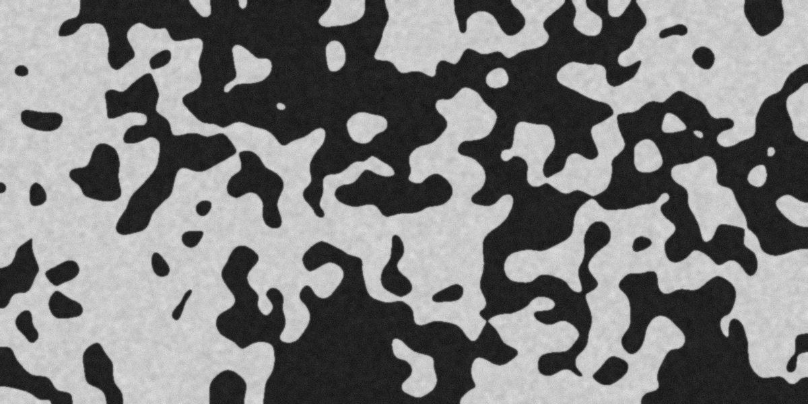
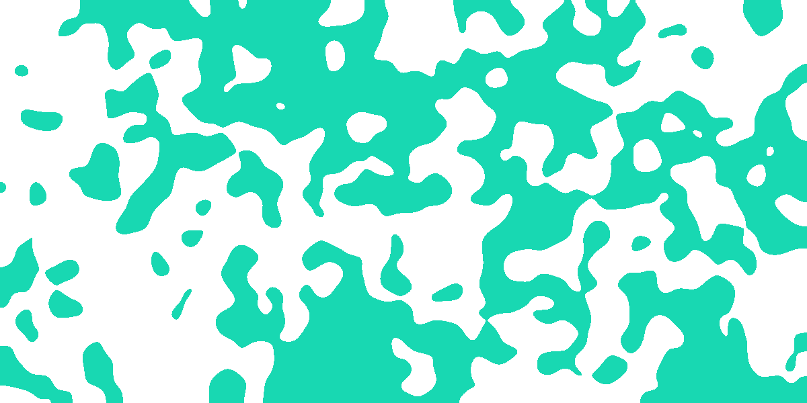
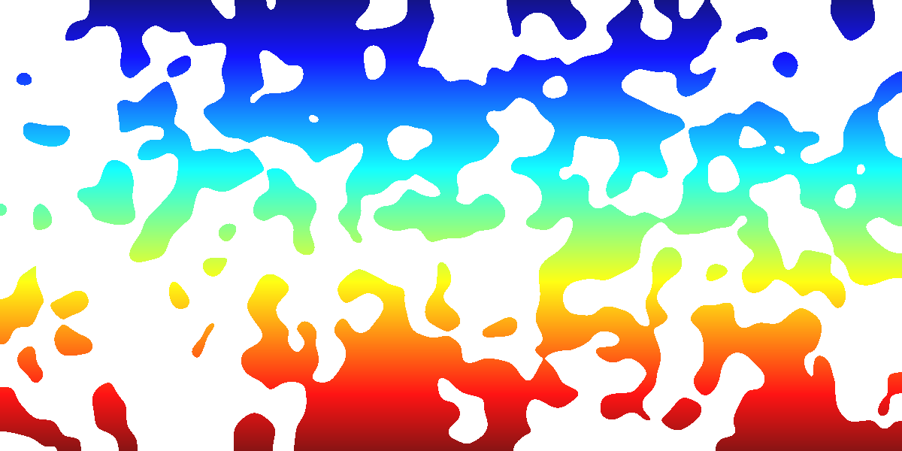
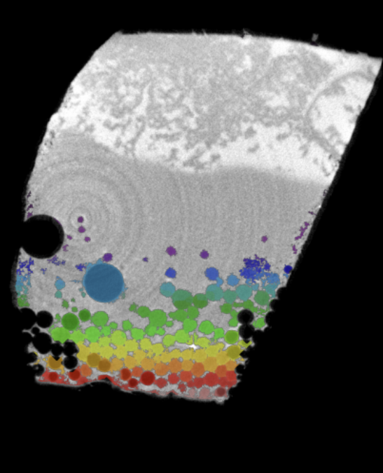
What controls transport through a porous material, how readily a fluid or solute crosses it, lives in a pore network the eye never reaches. X-ray micro-CT scans the porous PDMS I build and returns it as a stack of grey slices.
We segment the pore space and read off the porosity, whether the pores percolate across the sample, and how tortuous the paths are, with a watershed step separating touching pores so each one can be measured on its own.
Fields an experiment can't reach
We compute the flow and concentration fields experiments cannot easily resolve, from inside a drying drop to a full device.
In drying drops we solve the coupled evaporation, flow, and solute transport to see where material ends up, so a mechanism can be tested before the experiment. At device scale we model the flow through microfluidic channels before they are fabricated.
In my Master's I modelled an evacuated-tube solar water heater using a finite-volume Boussinesq treatment of buoyancy to predict the natural-convection loop and the outlet temperature. We use ANSYS Fluent and COMSOL for most cases, with OpenFOAM for the larger ones.
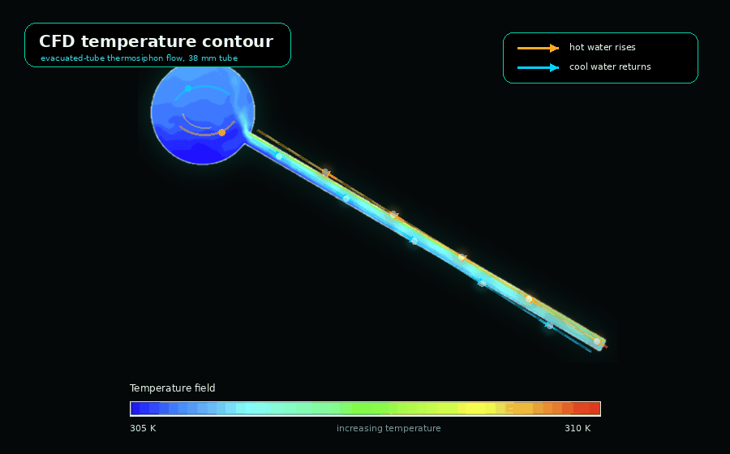
Bacteria that organize as they dry
Living particles assemble too, and drying forces their hand.
A drop laden with bacteria dries like any other, an outward flow sweeping cells toward the pinned edge. There the receding interface and capillary forces crowd and squeeze the rod-shaped cells, here Klebsiella pneumoniae, into dense, aligned packings. The dried deposit records how the cells were pushed together. JCIS 2023
A drying droplet is a flow engine
As a drop evaporates, the liquid it loses at the surface is replaced from within, which drives a steady internal flow. Fluorescent tracer particles tracked under a microscope make that flow visible, as in the two videos.
The flow follows the evaporation. In the hydrophilic drop on the left, drying is fastest at the pinned edge, so liquid moves outward and carries particles to the rim as a coffee-ring stain. In the hydrophobic drop on the right, drying is fastest at the apex, and the gradients this sets up drive a recirculation that gathers particles at the centre. The dried deposit records the flow, which we work to read and to steer.
On its own, a drop's internal flow is near ten micrometres per second, driven by its own evaporation and impossible to steer. Place a volatile drop alongside and its vapour adsorbs on the water surface, creating a surface-tension gradient that drives a Marangoni flow three orders faster.
Drops that talk through vapor
A more volatile drop set nearby, ethanol, builds an uneven vapour field around the water drop. It adsorbs more on the near side of the water surface and lowers the surface tension there, setting up a small but directional gradient across the drop cap.
That gradient drives a Marangoni recirculation near ten millimetres per second, about a thousand times the isolated drop's flow. Its strength is set by the drop spacing, it adds nothing to the liquid, leaves the drying rate unchanged, and stops once the neighbour evaporates.
The vapour coupling produces a range of effects, one per panel below.
A volatile ethanol drop placed beside a water drop seeds an asymmetric vapor field. The uneven adsorption drives a surface-tension gradient, pulling the interface into a fast Marangoni roll (~10 mm/s) with no external forcing. Phys. Fluids 2018
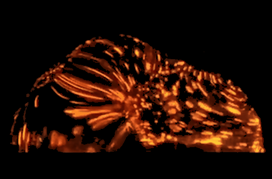
A nanofluid drop placed near an ethanol drop feels an asymmetric Marangoni flow (~1 mm/s) that pushes its particles to one side. The thinner shell left on the far side buckles under evaporation-driven capillary pressure, and the neighbour's distance sets where it buckles and the final deposit shape. JCIS 2019
Left panel: a water drop is placed on a spot of food dye, and an ethanol drop set alongside drives a Marangoni convection that mixes the dye through in a few seconds. Right panel: with no neighbour, the same drop mixes by diffusion alone, which takes several minutes. We studied this in a viscous glycerol drop in PCCP 2020.
A saline drop left to evaporate deposits salt crystals as it dries. The evaporation-driven flow and contact-line pinning set where the crystals nucleate and the pattern they leave behind.
The internal roll carries solute toward or away from the contact line depending on neighbour placement. We redirect crystallization nucleation sites on demand, without touching the drop. JCIS 2022
A sustained vapor gradient exerts a net force on the drop's contact line. The drop migrates toward the volatile source, covering millimetres on a flat surface with no mechanical actuator.
An asymmetric ethanol vapor field drains liquid from a drop's centre and splits it. Remove the vapor and the halves flow back and coalesce, driving a brief internal vortex visible in tracer particles.
Particles less dense than the liquid rise to the curved top surface and slide toward the apex, collecting into a tight central aggregate rather than a rim ring. The larger, more buoyant particles reach the centre first and the smaller ones settle around them, giving a size-graded mound set by the drop's curvature. JCIS 2021
A volatile drop set alongside drives a Marangoni convection far stronger than the evaporation flow, roughly a thousandfold, which breaks the aggregate apart and scatters the particles across the drop. JCIS 2021